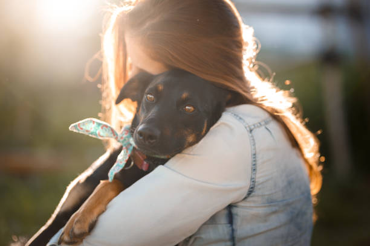

Ellos necesitan tu ayuda
Adoptame, una esperanza para los animales
Adoptame es un centro de adopcion de animales sin fines de lucro que trabaja para salvar la vida de animales abandonados y maltratados. Cada año, nuestro equipo rescata a cientos de animales de las calles, de hogares abusivos y de situaciones de peligro.
Nuestro objetivo es encontrar hogares amorosos para todos los animales que rescatamos. Nos comprometemos a proporcionarles el cuidado y la atención que necesitan para prosperar.
Tu ayuda es importante
Para seguir salvando vidas, necesitamos tu ayuda. Tus donaciones nos permiten cubrir los costos de alimentación, atención veterinaria y alojamiento de los animales en nuestro cuidado.
¿Cómo puedes ayudar?
Hay muchas maneras de ayudar a Adoptame. Puedes hacer una donación única, suscribirte a una donación mensual o organizar un evento de recaudación de fondos.
¡Tu ayuda puede marcar la diferencia!
Cada donación, por pequeña que sea, ayuda a salvar la vida de un animal. Con tu ayuda, podemos seguir proporcionando un hogar amoroso y seguro a todos los animales que necesitan un lugar al que llamar hogar.
Dona hoy mismo y haz una diferencia en la vida de un animal
Visita nuestra página web para obtener más información sobre cómo ayudar
www.adoptame.org
¡Gracias por tu apoyo!
Algunos ejemplos de cómo tu donación puede ayudar:
Una donación de $50 puede proporcionar comida para un animal durante una semana.
Una donación de $100 puede cubrir los gastos de atención veterinaria para un animal.
Una donación de $500 puede ayudar a cubrir los costos de alojamiento para un animal durante un mes.
Tu donación es un regalo que puede cambiar la vida de un animal.
¡Dona y ayudanos a mantener nuestro refugio!.